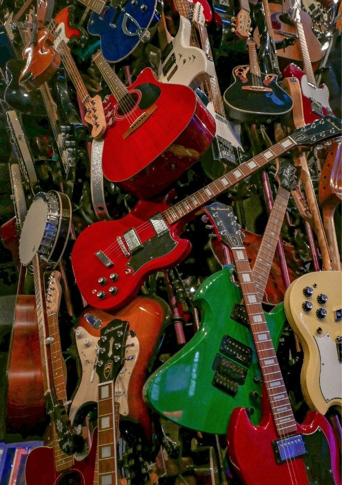
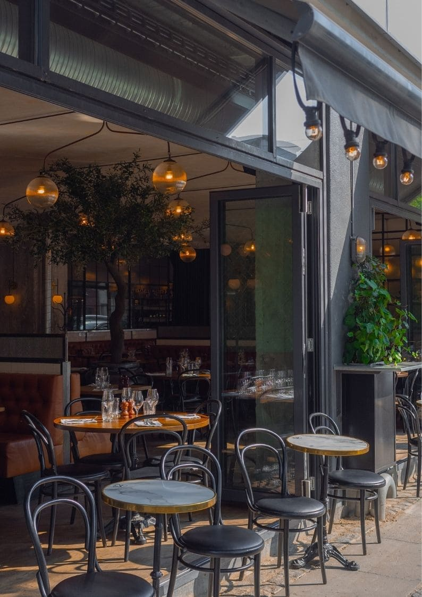

It all started with some love that long ago!
The Playhouse Theatre, located in Auckland city of New Zealand, dates
back to 1923 when it was originally used as an old-time music-hall. At
its height, the theatre was a glorious building reflecting the décor
of the inter-war period. Gradually the theatre fell into disrepair in
the 1950's as a result of other forms of entertainment being
readily available and finally closed its doors in 1957. The building
was acquired in 2008 by a trust set up to restore the grand old
building to its former glory. After much hard work and financial
input, The Playhouse Theatre was re-opened in 2012 resplendent in its
original condition, a working museum.

Enjoy our museum of theatre history!
The Playhouse Theatre Museum explores different aspects of
theatrical history through paintings, photographs, costumes, and
memorabilia collected over 100 years. But it is not the exhibition
of history, but the experience of the Theatre itself that sets the
place apart from other museums, according to museum director George
Tongariro. While the official theatre was The Royal Theatre, The
Court Theatre was equivalent to what would today be the King's
private television lounge and when you step in here, you sense the
history everywhere. Indeed, with the original interior still intact,
visitors may sit down in one of the plush velvet chairs, surrounded
by the royal boxes and intricately decorated ceilings, letting
themselves be transported right back to the 20th century.
Our museum is free and open to the public, visit us today!
Enquire about Tour Guides
Get you caffeine fix at The Playhouse Café
Whether you're after a quick bite and a coffee on-the-run, a
lingering long lunch or a celebratory high tea, The Playhouse Bistro
& Café is Auckland's new destination for food and drink. With views
into the beautiful historic theatre and a great relaxed atmosphere,
the Playhouse Cafe helps you take in the rich pastimes of theatre,
your new coffee spot.
Enquire about Event Hire
